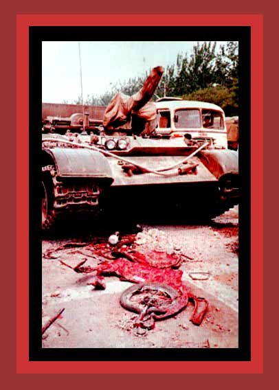

| The communist Chinese government has never been respectful of human life, murdering as many as 35,000,000 people since the communist seized control over the whole country in 1949. The killing lessened after Mao Tse-tung's death in 1976, but still a citizen's life was conditional on obedience to the Communist Party. In 1989 students and supporters who were carrying out large scale pro-democracy demonstrations in Tiananmen Square, Beijing, were attacked and massacred by the Army. The Chinese Red Cross claimed that 2,600 were slaughtered. Thousands were arrested and sent to forced labor camps, and hundreds were executed. Here is shown all that is left of a demonstrator and his bicycle. Documentation: China's Bloody Century. Source: "Tiananmen, April-June 1989". |